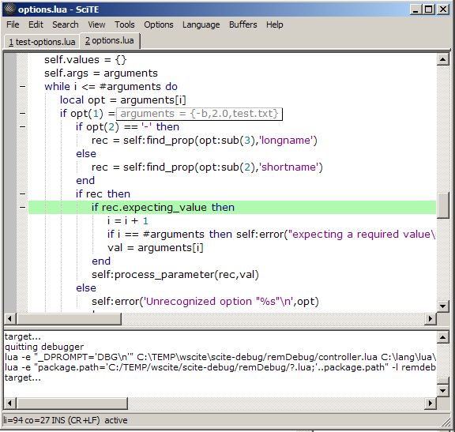
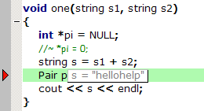

Using symbolic debuggers with SciTE
SciTE has limited support for spawning interactive programs; currently
only the Win32 version can do this (for instance, python) and it is
very bound into the job queue mechanism. I wanted to use gdb and other debuggers
with my favourite code editor on both platforms, so the solution was to create a Lua extension library
which provides the missing functionality without interfering with any existing, delicate machinery.
This release has generalized the debugger machinery to accept different
debugger backends, so now you can also debug Python, Lua, Java and C#
Mono programs. Thanks to the OnKey
extension, it can now use the same shortcut keys on both platforms -
I've integrated this useful functionality into the new version of extman
Debugging Using SciTE
This extension assumes that your debugger/language of choice is on your path, so if you have Python or Lua on Windows make sure of this.
The property debug.target should be set to the full path
of the program you wish to debug. If it is not set, then debugger.lua will deduce the actual debugger
needed from the extension of the target; if '.lua' it will choose clidebugger, if '.py' it will choose
pydb, if '.java' it will choose jdb, if '.cs' or '.exe'
it will choose mdb. Otherwise, it falls back to gdb.
In the output window, you can type $debug.target = PATH-TO-FILE;
any SciTE property can be set in this way.
Tools|Run(Alt+R)
will start the session; if there are any breakpoints already defined with Tools|Breakpoint(F9)
they will be set and you will then move to any break position. Once
there you may then add other breakpoints in a similar way. Note that mdb
and pydb
work slightly differently; you are always taken to the first executable
line of the program. In the case of Python, this is probably not where
you want to start, so put a breakpoint where the main program actually
starts running. The Lua debugger clidebugger normally works like this, but I'm driving it in a way which requires an explicit breakpoint.
Tools|Step(Alt+C) and Tools|Step Over(Alt+N) can be used to step through code, and Tools|Inspect(Alt+I) and Tools|Locals(Alt+Ctrl+L)
can be used to view the value of any variable under the cursor. You can
of course enter any debugger command in the output pane, but any simplifications will not take place.
Alt+R will resume execution. You can also use Tools|Go to (Alt+G) to create a temporary breakpoint and resume execution to that location. (This may not be supported for all debuggers.)
If there was a crash, the position will be highlighted in red. Tools|Backtrace(Alt+Ctrl+B)
will show the stack trace, and double-clicking on a stack trace line
will take you to that frame number. (Currently only implemented for
gdb, mdb and clidebug.) Tools|Up(Alt+U) and Tools|Down(Alt+D) are also useful at this point; Alt+U will take you to the function that called the current function, and so forth; the function stack has depth, so any error or breakpoint defines the deepest function level.
If the mouse hovers over a symbol while halted, scite-debug will attempt to evaluate that symbol and present it as a tooltip.
Some debugger-specific Features

This version comes with two simplications which recognize two common C++ string patterns; std::string and Scintilla's SString.
These attempt to extract the actual string value from the structure
dump. (Obviously these patterns are very dependent on the actual
implementation of the type concerned!) Here is the raw dump of a std::string value in gdb:
(gdb) p s
$1 = {static npos = 4294967295,
_M_dataplus = {<allocator<char>> = {<No data fields>},
_M_p = 0x3d3acc "hellohelp"}, static _S_empty_rep_storage = {0, 0, 0, 0}}
(gdb) quit
It will also attempt to simplify frame dumps by collecting each frame into one line.
It is possible to skip through library
calls. These typically happen in C++ when you are calling a Standard
Library feature implemented as a template, and with Python if you call
a module method. (You can switch this off by setting the property debug.skip.includes to false.) On Windows you will also have to specify where your compiler's include files sit by setting debug.skip.file.matching (for gdb) and debug.skip.file.matching.py
(for Python). By default on GTK platforms we will skip through any file
begining with '/usr/'. On my Windows box I have these definitions -
note the forward slashes for Mingw and the lower-case for Python (even
though it started with a capital in Explorer!)
debug.skip.file.matching=d:/stuff/MinGW debug.skip.file.matching.py=d:\python25
A cool new feature is automatic pointer value expansion. If an expression is evaluated, and works out as a pointer, then we attempt to dereference the pointer. This isn't always possible (e.g. NULL or invalid pointers) but you will be told if such evaluation was not successful.
You may debug shared libraries (.so or .dll) even if you do not have a debug version of the host program. GDB allows
breakpoints to be pending, but refuses to set any breakpoints until it has a symbol table. scite-debug gets around this by feeling GDB a small shared library (stubby) in the case where the program has no symbols. (If you are using Mingw, then you will have to get an updated GDB that supports pending breakpoints (but keep the old version, the new one is still 'experimental'). You will also have to set the debug.breakpoint.pending property to be true.) But you must indicate that your debug target has no symbols up front; for example, if you were debugging Python extensions, then the debug target will be [n]python,
where the '[n]' prefix indicates that we know that the global instance of Python has no debug symbols.
Environment variables can be set for the debug target using the debug.environment property. This is a semi-colon separated list of VAR=VAL pairs.
Tips and Tricks
As always you can type debugger commands directly into
the output pane. A useful trick is if you want to see when a global
variable changes in gdb; when stopped at a break, you can type watch var at the prompt and type Alt+R to continue, and you will break when var changes.
If the program has finished, or not yet run, then the
prompt works differently. You can set and evaluate SciTE properties
interactively. For instance, if I type the command $SciteDefaultHome on my machine, I get the response SciteDefaultHome = "/usr/share/scite". Properties can also be set. To get around the limitation of only being able to set one debug.target at once, I put in a few alternatives in my user properties file:
ucc=/home/sdonovan/underC/src/ucc aggregator=/home/sdonovan/serial/cpp_client/aggregator
Then if I wish to debug underC, I can simply type $debug.target=$(ucc) and the magic of SciTE property expansion does the rest.
If the line doesn't start with $, then the default action is to evaluate a Lua expression. This is very useful generally for debugging, or if in case you need to do some arithmetic ;).
= 20+10 30 (lua)
New with this version is the ability to also execute
shell commands. If the first character on the line is '>', then the
rest of the line is assumed to be a shell command and will be executed
using spawner.popen
It is perfectly possible to run more than one SciTE instance, debugging different targets. This is useful if you want to debug both an application written in C++ while debugging any embedded scripts in Lua.
Debugging Embedded Lua Scripts
The case here is where there is a host program, like Lua or SciTE itself, and a script running in that environment. If the host has no debug symbols, then these considerations apply; either way, you will need a GDB version that supports pending breakpoints.
A major new feature of this release is the ability to step from Lua code into C/C++ extension code. To do this you specify both the host and the script in the same debug target string, in the form :gdb;PATH-TO-PROG;LUA-SCRIPT. If the host has no debug symbols, then it will need a prefixed '[n]'. For example:
debug.target=[n]:gdb;lua;testlfs.lua
Now the cool thing here is that if this Lua script loads binary extensions that have debug symbols, then it is possible to step from Lua to C code. Alternatively, you could have put the full path to a debug build of Lua, in which case you can step through the operation of common functions like print. This can get irritating, but remember that you can always step over such calls.
Some extra notes are found here.
With a little bit of patience, you can use SciTE not only to debug the executable, but any SciTE Lua scripts.
In fact, scite-debug can debug itself, which shows its flexibility. There are two distinct ways of doing this,
using the above approach, and doing remote Lua debugging.
These instructions apply
in fact to any program which uses Lua as its extension language. I have
provided a modified version of the Lua remote debugger, remDebug. (This package requires lfs and luasocket)
The first thing you need to do is put this in your Lua startup script (I put these lines at the end of extman.lua)
package.path=package.path..";c:/lang/lua/lua/?.lua" require "remdebug.engine" remdebug.engine.start()
The first statement ensures that SciTE can find other Lua packages using require; alternatively you can put a copy of engine.lua in a directory remdebug in your SciTE package.path
In the debugger SciTE, you will have to set the property debug.target to be :remote.lua
(this can be done from the debugger prompt as discussed before.) The
colon is important, it distinguishes this from ordinary Lua scripts,
which are debugged using clidebugger.
Go to the function you want, set breakpoint with F9; Start the debugger with Alt+R; it will wait for the remote program to start. Finally, launch the other SciTE.
The absolutely cool thing about remDebug
is that the program you are debugging does not actually have to be on
the same machine, since all communications are done with sockets. To
debug a truly remote Lua program, start the SciTE debugger running with :debug.target=remote.lua as before, and put these lines in front of the remote script (note the braces):
require "remdebug.engine"
remdebug.engine.start()
remdebug.engine.config { host = your-ip-address }
Installation
Download from LuaForge
For this release, you will need a fresh version of SciTE which exports its Lua symbols and has loadlib enabled. The latest public release is : SciTE 1.76.
On Windows, I usually have this in my user properties file:
ext.lua.startup.script=$(SciteDefaultHome)\scite-debug\extman.lua
which means you have to unzip scite-debug.zip in the scite\bin
directory next to your SciTE executable. On Linux, unzip this file in
your home directory and put this in your user properties file:
ext.lua.startup.script=$(SciteUserHome)/scite-debug/extman.lua
Implementation Notes
This extension is a small DLL (or shared
library) which captures the debugger process and sends debugger output
back to the Lua subsystem. It is important that Lua code is called in
the main SciTE thread, since the subprocess runs in its own thread. On
Windows, I use the same trick as in SingleThreadExtension.cxx, which is to create a hidden window and send output to it using a message; on GTK, I use gtk_input_add.
For Windows, I freely used the existing SciTE code for spawning a process. Usually we are blocking on a ReadFile
call, except at the end where we keep peeking to ensure that the
process loop ends gracefully (I found that always peeking leads to
performance problems.)
On the GTK/Unix side, I use forkpty to capture an interactive process like gdb.
It is then running in a pseudo-terminal which by default is
line-buffered. (This is similar to 'canonical' serial communications
and one can use the same termios structure to control
pseudo-terminals). The debugger prompt is set to something ending in a
line feed, so that we always get the prompt; for gdb, 'set height 0' is used to disable gdb's
default paging. Note that not every debugger allows one to do this,
which will probably require a rethink of always operating on a
line-per-line basis.
I launch gdb using the -fullname flag, which tells gdb
to specially encode any break lines with the fullpath of the file,
begining with a repeated '\032' character - this is the mode used by
Emacs. Parsing of gdb output is largely platform-independent. There is a function simplify_term which attempts to unmangle managed strings like std::string and SString; this is a useful customization point.
Further Work
This version of scite-debug has implemented an important goal, which was to factor out the common code for all debuggers and make gdb a special case. It is now a proper object-oriented framework where all debuggers derive from the Dbg
class and override methods as needed. The Python and Lua debuggers are
already useful, but the others need some work. In particular, jdb is a strange beast because you specify breakpoints using the classname,
not the filename. Well, normally that is how Java code should be
organized, but anonymous classes are annoying because they get given
classnames like OuterClass$1, etc and this I can't
automate yet. Also, the classes must all be in the same directory,
since I'm not doing packages yet. But good enough for doing your
homework! The Mono debugger mdb is still rather young but
Mono is a platform that badly needs better debugging integration. So
SciTE is now one of the few options available to people who need to
debug C# (or Boo!) on Mono.
There are other candidate debuggers; for instance the counterpart of mdb on Windows is cordbg,
which comes with the .NET SDK. . Another candidate would be the Intel
Fortran debugger, which is a good deal more intelligent than the free
Fortran systems. Generally, it gets easier to add debuggers since they
tend to follow patterns (e.g. do they quit automatically when the
process ends, or do they wait for a quit command?) and these can be
captured generically. Remote debugging is important for people working
in embedded environments and I'd like to add the few hooks necessary
for this to work in SciTE.
SciTE has some interface limitations; it would be very useful for a debug interface to have a general library of common graphical widgets (such as floating toolbars, listboxes, and the common file dialogs). These can be interfaced using exactly the same techniques as the spawner library is using. Here I completely agree with the SciTE philosophy that SciTE is not an IDE, that it should provide the hooks for developers to add the functionality that they need, and not burden any other users. (For an example of why this minimalist view is important, have a look at KDevelop and Anjuta.)
As a final note, the danger of supporting everything is that nothing gets supported thoroughly. I am currently concentrating on C/C++ and Lua, but any core enhancements made would of course be available to the other debuggers.
Extra Utilities
ctags Support
SciTE has had some built-in ctags support for a while,
but it is a little awkward. What you do have to do is create a tags
file using the Exuberant ctags utility, which is widely available. For
instance, for SciTE itself, I run ctags src/*.cxx gtk/*.cxx on Linux, and ctags src\*.cxx gtk\*.cxx on Windows. ctagsdx.lua will read this tags file into an internal table and you can then navigate to any tag using Tools|Find Tag (Ctrl+. - that is, period). Once there, you can use Tools|Go to Mark
(Alt+.) to get back to where you started. If there is more than one
matching tag (which commonly happens with C++) you are given a
drop-down list of candidates to choose from.
Tools|Set Mark (Ctrl+')
is useful if you just want to remember your last position (say, at the
start of a find operation); Find Tag automatically pushes the mark stack. If a mark has been set, you can use Tools|Select From Mark (Ctrl+/) to select up to the current position.
You can change the shortcuts to something more intuitive for you ;)
Buffer Switching and Moving
I've always missed the ability to switch between the last two recently used buffers in SciTE. switch_buffers.lua provides two things: Ctrl+F12 switches the last two buffers, and Alt+F12 gives a drop-down list of the buffers in recently-used order.
For C/C++ files, Tools|Switch Source/Header(Ctrl+Shift+H) can be used to move between source and header files.
If you have more than one SciTE instance open, Tools|Move to Other(Ctrl+Alt+M) will move a buffer to the other instance. (This requires SciTE 1.76 to work on GTK platforms.)
Smart Selection
With select_string.lua enabled, you get a
more intelligent double-click selection. This extension attempts to
collect all characters together with the same style, for instance, a
string or a block-comment. With symbols, it will behave as before. As
always, if this feature irritates you, then simply remove select_string.lua from the scite_lua directory.
A common operation is selecting blocks. Tools|Block Select (Ctrl+Shift+A) will select the current block. To grab a whole function or class, make sure the cursor is on the first line. Tools|Smart Paste (Ctrl+Shift+V) will attempt to paste a block with the correct indentation. Position the cursor on a line, and the block will be inserted afterwards. The block remains indented, in case the paste wasn't smart enough and you need to manually adjust the identation with tab and shift-tab.
Micromodes
This comes from an idea I explored in the Sciboo editor.
It gives you precise control about exactly what tool is used to build
or run a file. Normally Build (F7) is usually set to 'make'. Using make
is overkill for simple projects, especially if you have a number of
these in the same directory. With micromodes you can supply a build
command directly in the source file. For instance, if your C file
begins like this:
// build@ gcc fred.c alice.o -o fred
then that will set the property command.build.* to 'gcc fred.c alice.o -o fred'.
The general format is OPERATION@ COMMAND ARGS. 'build','compile' and 'go' are valid operations.
For instance, if you had a file which was to be processed with a custom command, then go@myprog myfile.txt would invoke myprog on myfile.txt.
If COMMAND is a global Lua function, then it will be called directly rather than executing the command as a program. For instance, -- go@dofile $(FileNamePath) in front of a Lua file will cause the file to be executed using SciTE's built-in Lua interpreter. Please note that any of the usual built-in SciTE properties can be used.
A useful shortcut is to end the command with a '*' (asterisk). For instance, the above example could be written as
go@dofile *. The current file name $(FileNamePath) will replace '*'. If the command is a GNU-style compile tool like gcc, then -o $(FileName) is also appended. So if I want a file to be compiled with gcc in debug mode, then this is sufficient:
// build@ gcc -g *Steve Donovan, 2007-2008